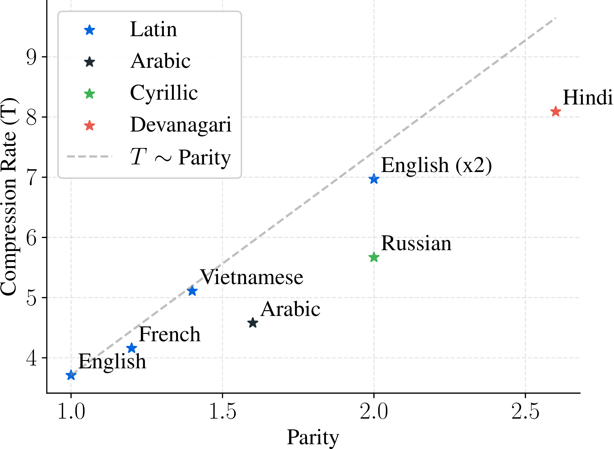

We study the impact of data compression on scaling laws. We find that:
[F1] In compute-optimal scaling, bytes (not tokens) of data increase proportionally to parameter count.
[F2] At each training budget, there is an optimal compression rate, and its value decreases at larger scales.
[F3] The optimal compression rate varies across languages and differs from the compression rate of popular BPE tokenizers.
Tokenization determines how raw text is compressed into discrete tokens for language model training.
Most scaling law research fixes the tokenizer and varies only model size and data amount, but what happens when we can control the tokenizer's compression rate (bytes/token)?
We train language models at fixed compute budgets.
We sweep over compression rate and model size, which together determine the amount of training data under a fixed budget and the corresponding bytes per parameter ratio.
The relationship between compression, bytes per parameter ratio and loss is the most interesting here.
Now, let's dive in...
[F1] Optimal Data to Model Size
For a fixed compute budget (1e20 FLOPs), we plot loss against compression rate and bytes per parameter ratio.
This yields a 3D IsoFLOP:
The bowl-shaped IsoFLOP surface shows that, for every compression rate, the lowest loss is achieved at roughly the same bytes per parameter ratio (triangles).
Interactive version of the plot above. You can rotate it and hover over points to check loss, compression, and bytes per parameter values:
We observe that the optimal bytes per parameter ratio remains nearly constant across different compression rates.
Finding 1
The optimal ratio between bytes of data and model parameters is approximately constant across varying compute budgets and compression rates.
Therefore, when generalizing a scaling recipe to a model with a different tokenizer, we advise matching the ratio of training bytes (not tokens) to model parameters.
With the data-to-parameter ratio pinned down, a natural follow-up: what compression rate should we target?
[F2] Optimal Compression Rate
For each compute budget (from 5e18 to 2e21 FLOPs), we gather the optimal points (triangles) from [F1].
This lets us see how loss changes with compression across compute budgets:
U-shaped loss profiles across increasing compute budgets. For best results, models should be trained at a compression rate close to the optimum.
Interactive version of the plot above. You can rotate it and hover over points to check loss, compression, and compute budget:
We fit a power law to model the relationship between compression rate, compute, and loss (for details, see the paper):
Power law estimating loss given compression rate and compute budget.
We see that the optimal compression rate decreases for higher compute budgets.
Finding 2
At each training compute budget, there is an optimal compression rate that minimizes loss.
The optimal compression rate decreases as the training budget increases.
These findings hold for English, but do they generalize across languages?
[F3] Beyond English
We run the same experiments on non-English data (training on each language separately) to see whether these findings still hold.
The IsoFLOP analysis (as in [F1]) lets us find the optimal bytes per parameter ratio and compression rate for each language:
FrenchArabic
RussianHindi
Across languages, the IsoFLOP "bowls" are shifted along the compression-rate axis, meaning that the optimal compression rate depends on the language.
Below, we compare these optima against Parity∗ and the compression rates of popular BPE tokenizers:

The optimal compression is correlated with Parity.The optimal compression rate differs from compression of popular BPE tokenizers.
We observe relation between optimal compression rate and Parity shoing that sparsly encoded languages benefit from higher compression.
Finding 3
The optimal bytes-to-parameter ratio and compression rate vary across different languages.
Both are correlated with Parity
∗Parity is the ratio of byte length needed to express the same content in a given language versus English.
E.g.: a sentence translated to Russian will be encoded by ~2× more bytes than its English version.
↩
BibTeX
@article{limisiewicz2026cotok,
title={Compute Optimal Tokenization},
author={Limisiewicz, Tomasz and Pagnoni, Artidoro and Iyer, Srini and Lewis, Mike and Mehta, Sachin and Liu, Alisa and Li, Margaret and Ghosh, Gargi and Zettlemoyer, Luke},
year={2026}
}